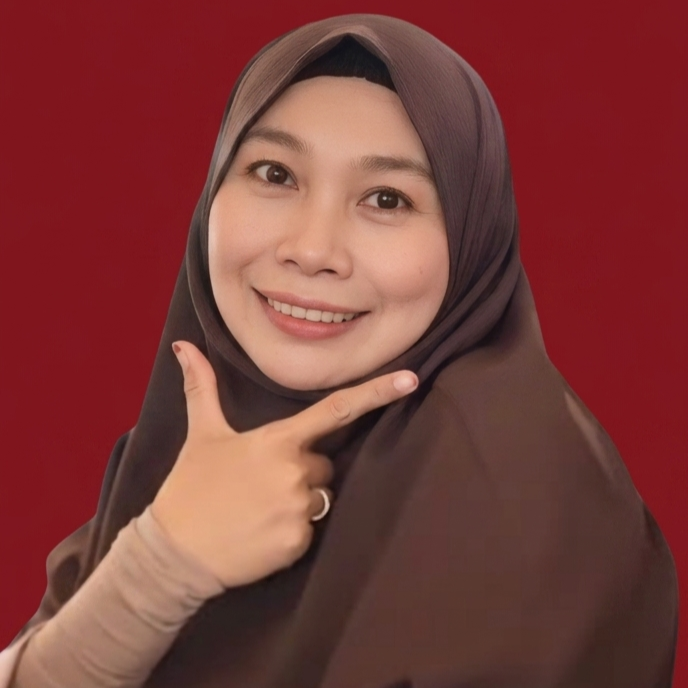
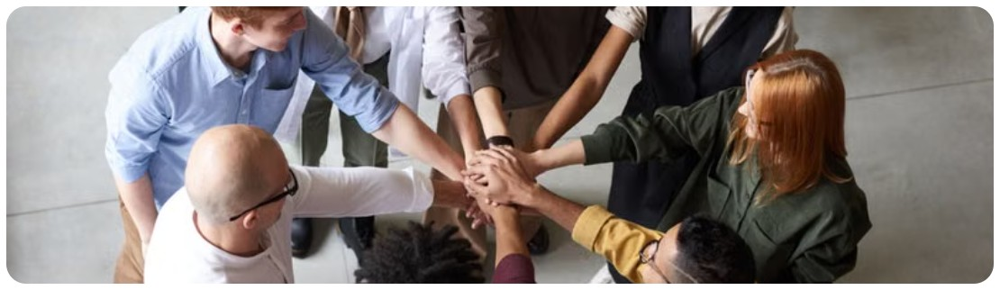
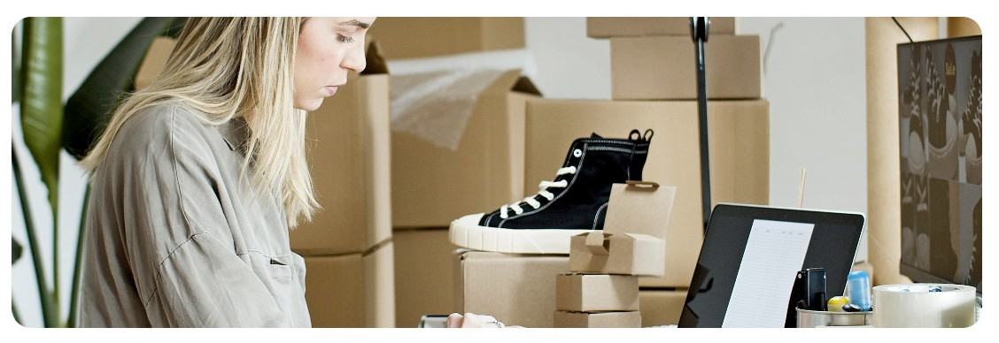

1. Amati kebutuhan
Perhatikan keluhan, kebiasaan, tren, dan masalah di sekolah, rumah, atau lingkungan sekitar. Contoh: teman sering lupa membawa alat tulis.
Amati kebutuhan, temukan ide, lalu uji apakah idemu dapat menjadi usaha yang bernilai.

Foto pengembang
RASTATI, SP · SMKN 2 Kolaka

Bayangkan istirahat sekolah: antrean kantin panjang, sementara beberapa teman belum sempat sarapan. Masalah apa yang kamu lihat? Produk atau layanan apa yang bisa membantu?

Siapa yang membutuhkan solusi? Mengapa mereka akan memilih ide usahamu? Sampaikan satu jawaban secara lisan.
Coba jawab tanpa membuka materi. Ini untuk mengenali pemahaman awalmu, bukan menentukan nilai akhir.
Peluang usaha adalah kesempatan menciptakan barang atau jasa yang menjawab kebutuhan orang lain dan memungkinkan usaha berjalan secara layak.
Perhatikan keluhan, kebiasaan, tren, dan masalah di sekolah, rumah, atau lingkungan sekitar. Contoh: teman sering lupa membawa alat tulis.
Cek keterampilan, bahan, waktu, alat, dan modal yang tersedia. Contoh: kamu bisa mendesain label dan memiliki akses ke percetakan kecil.
Tanyakan minat calon pembeli, hitung biaya dan harga, amati pesaing, lalu coba dalam skala kecil. Ide menarik belum tentu layak dijalankan.

Sejumlah teman ingin sarapan cepat sebelum praktik. Kamu menawarkan paket roti dan buah melalui pemesanan sehari sebelumnya. Tanyakan menu yang disukai, hitung biaya bahan dan kemasan, tetapkan harga wajar, lalu uji dengan beberapa pesanan. Catat tanggapan mereka sebelum memperluas penjualan.
Ingat: kebutuhan nyata + kemampuan menyediakan solusi + calon pembeli + perhitungan biaya = peluang yang lebih masuk akal.
Pilih satu kebutuhan, sumber daya, dan cara menjangkau pembeli. Diskusikan apakah rancanganmu realistis.

Langkah berikutnya: tanyakan minat 3 calon pembeli, perkirakan biaya, dan uji penjualan kecil sebelum menambah modal.
Pilih jawaban. Jika keliru, baca petunjuk materi lalu coba lagi.
Isi setiap kotak dengan satu huruf. Kotak berwarna akan berubah menjadi putih berteks hitam saat terisi. Petunjuk ada di sebelah kiri, kisi kotak di sebelah kanan.
Jawab kelima soal. Skor dan pembahasan muncul setelah semua soal dijawab.
Seberapa siap kamu menemukan peluang usaha di sekitarmu? Pilih satu jawaban, lalu ceritakan alasannya kepada teman atau guru.
Amati satu kebutuhan di rumah atau sekolah. Tuliskan siapa calon pembelinya, solusi yang bisa kamu tawarkan, serta satu cara sederhana untuk menguji idemu.